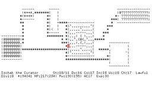
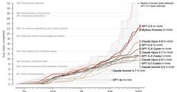
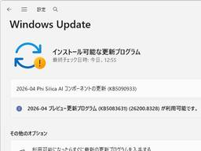
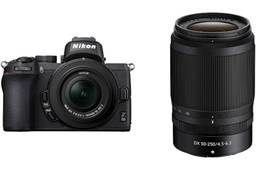
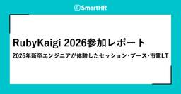
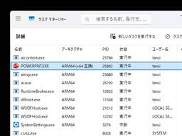
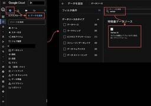

直近1週間の更新
5/5 (火)
無料で高機能な画像編集ソフト「GIMP」のUIをPhotoshopっぽくできる「PhotoGIMP」  GIGAZINE
GIGAZINE
オープンソースで開発されている高機能な画像処理・編集ソフトの「GIMP」を、AdobeのPhotoshopユーザーにとってなじみやすいUIレイアウトに変換するパッチ「PhotoGIMP」が公開されているので、実際に導入してみました。続きを読む...
2時間前
「ONE PIECE」新アニメシリーズ「THE ONE PIECE」来年2月にNetflix世界配信決定！  シネマトゥデイ
シネマトゥデイ
尾田栄一郎による人気マンガ「ONE PIECE」（集英社刊）を再びアニメ化する新シリーズ「THE ONE PIECE」が、2027年2月よりNetflixで世界配信されることが決定し、新たなコンセプトアートが公開された。
3時間前

歯周病菌を「狙い撃ち」する新しい歯磨き粉が登場――善玉菌は減らさない 1
1 ナゾロジー
ナゾロジー
私たちの口の中には、700種類以上の細菌がひしめき合っています。 まるで小さな都市のように、善良な住民もいれば、トラブルメーカーもいる。 そんな「口内タウン」で、これまでの強い殺菌タイプの歯磨き粉やマウスウォッシュは、問題を解決するために街ごと焼き払うような方法を取ってきました。 悪い菌を殺すために、良い菌まで道連れにしていたのです。 しかしドイツのフラウンホーファー研究所（FhG）が開発した新しい歯磨き粉は、まったく違うアプローチを採用しています。 歯周病菌をピンポイントで「無力化」し、善玉菌は元気に活動できる状態を保つという、いわばスナイパー型の歯磨き粉です。 この研究は2026年1月5日にフラウンホーファー協会のリサーチニュースとして発表されました。
3時間前
朝まで寝たいのに深夜に目が覚めてしまうのはなぜなのか？深夜の覚醒を防いでぐっすり眠るコツは？ 1 GIGAZINE
ふと深夜から早朝の3～5時頃に目が覚めてしまい、まだ暗いのになかなか寝付くことができなかった経験がある人もいるはず。一体なぜ深夜に目が覚めてしまうのか、どうすれば深夜の覚醒を改善できるのかについて、イギリスのウォーリック大学で心理学助教を務めるタラー・ムークタリアン氏が解説しました。続きを読む...
4時間前

闇は光より速い――光速を超え無限大へ向かう「特異点」を発見 1 ナゾロジー
真空中での光の速さは、秒速およそ30万キロメートル。 物理学が100年以上にわたって「これより速いものは存在しない」と断言してきた、宇宙の絶対的な制限速度です。 ところが世界最高峰の科学誌『Nature』に、その絶対をひっくり返すような論文が掲載されました。 イスラエル工科大学（Technion）のイド・カミナー教授らのチームが、光波の中に存在する多数の「暗闇の点」を直接観測したところその平均速度は、秒速約3億1200万メートル、つまり真空中の光速の1.04倍だったのです。 また全体をみると観測された闇のうち29%が光速を突破していました。 しかも、ある瞬間を切り取ると、速度は理論上は闇の速度が無限大に向かって発散しているということです。 この現象は、1970年代以来、マイケル・ベリーらの一連の理論研究で予測されてきたものでした。 彼は今回の研究で観測された闇のような存在について、光その…
4時間前
メルセデス・ベンツが物理ボタンを復活させる方針 2 GIGAZINE
自動車の車内操作は大型タッチスクリーンに集約される傾向がありますが、エアコンや音量調整など頻繁に使う機能まで画面内メニューに入ると運転中に操作しにくいという問題があります。メルセデス・ベンツは今後も大型スクリーンを搭載しつつ、直接操作したい重要な機能には物理ボタンを戻す方針を示しています。続きを読む...
5時間前
『マリオ』新作映画に異例のフォックス登場 日本語版声優・竹内栄治「ものすごいプレッシャーでした」 シネマトゥデイ
声優の竹内栄治が5日、都内で行われた映画『ザ・スーパーマリオギャラクシー・ムービー』の公開記念舞台あいさつに出席。本作で担当したフォックス・マクラウド役について「すごいプレッシャーでした」と感想を述べた。この日は日本語版ボイスキャストの宮野真守、志田有彩、畠中祐、三宅健太、関智一、山下大輝、本作のアンバサダーを務める西野七瀬、チョコレートプラネット、HIKAKINも来場した。
5時間前

無料でYouTubeなどから動画・音楽をダウンロードできるAndroidアプリ「YTDLnis」、オープンソースで開発され広告やユーザー登録なしで利用可能 31 GIGAZINE
動画のダウンロードを頻繁に行う人ほど、複数のダウンロードのタイミングを調節したり「寝ている間に自宅のWi-Fiでダウンロードしたい」といった管理をしたくなるはず。「YTDLnis」は無料で使用できて広告なし・ユーザー登録不要で、ダウンロードキューやスケジュールダウンロードなどを搭載した高機能なAndroidアプリです。続きを読む...
6時間前
無料で「ComfyUI」「Open WebUI」などからローカルAIモデルをGPUで動かすDocker環境を一発で構築し動かし続ける「Puget Systems Docker App Packs」 2 GIGAZINE
ローカルPCでAIを使い始めるとき、Dockerの設定やGPUドライバの依存関係の解決に時間がかかるケースがあります。ワークステーションメーカーのPuget Systemsが公開した「Puget Systems Docker App Packs」は、1行のコマンドを実行するだけで生成AIや大規模言語モデルの実行環境を自動構築できるオープンソースのセットアップツールです。「ComfyUI」による画像生成から、チーム向けのローカルLLMサーバーまで、用途に応じた複数の環境テンプレートを選ぶだけで、すぐにAIワークフローを開始できます。続きを読む...
7時間前

ローグライクゲームの古典『NetHack』バージョン5.0.0リリース
GIGAZINE
「@」で表されたキャラクターでダンジョンを探索していく、1987年に登場したローグライクゲームの古典『NetHack』の最新バージョン5.0.0がリリースされました。修正点や変更点は3100以上あるとのことです。続きを読む...
8時間前
「Word」に新たな問題、EUDC文字（外字）が空白の四角形で表示される／Microsoftが調査中、今のところ緩和策なし 2窓の杜
米Microsoftは4月22日（現地時間）、「Microsoft Word」で新たな問題が発生していることを明らかにした。「バージョン 2603」（Build 19822.20180）以降へ更新すると、EUDC文字が空白の四角形（“□”）で表示される場合があるという。
8時間前

性格特性が「性的妄想の頻度」と関連することが明らかに ナゾロジー
人は誰でも、ふとした瞬間に頭の中で現実とは別の場面を思い描くことがあります。 それが仕事の成功や旅行の計画であることもあれば、恋愛や性的な場面であることもあります。 では、そうした「性的な妄想」をどれくらい頻繁に抱くかは、その人の性格と関係しているのでしょうか。 米ミシガン州立大学（MSU）の研究チームは今回、5225人の成人を対象に、「ビッグファイブ性格特性」と「性的妄想の頻度」との関連を調査。 その結果、誠実性や協調性が高い人ほど性的妄想の頻度が低く、ネガティブな感情傾向、特に抑うつ傾向が高い人ほど頻度が高い傾向が明らかになりました。 研究の詳細は2026年2月4日付で学術誌『PLOS ONE』に掲載されています。
8時間前
クリストファー・ノーランが『プラダを着た悪魔2』を気に入る「ファビュラスだった」 シネマトゥデイ
クリストファー・ノーラン監督が、映画『プラダを着た悪魔2』を鑑賞して大いに楽しんだという。トーク番組「ザ・レイト・ショー・ウィズ・スティーヴン・コルベア」に出演して明かした。
9時間前
『SUMIFしか使ったことがないシャア少佐が初めてSUMIFS関数を使った時の感想』というネタを機動戦士ガンダムの再放送を観ていたら思いついたという話 松田軽太のブロぐる
こんにちは！ 松田軽太です。 「SUMIFを使ったことある人が初めてSUMIFS関数を使った時の感想」というネタを長らくX（旧Twitter）の固定ポストにしていました。 これは「もし機動戦士ガンダムのシャア少佐が初めてSUMIFS関数を使ったら？」というIFの世界のポストです。 このポストをきっかけにいろんな人と仲良くさせていただきましたので、まぁ、それなりに思い入れもあります。 ですが、そろそろX（旧Twitter）のブランディングとテーマがズレてきたので、固定ポストから外すことにしました。 しかし、無くなってしまうのも、いささか寂しいので、ブログの方に残しておくことにします。 【SUMI…
11時間前
『ゼッテリアという店名に感じていた、そこはかとない違和感の正体について』の巻 松田軽太のブロぐる
こんにちは！ 松田軽太です。 今回はX（旧Twitter）にポストしたこの内容を記事化しました。 【ゼッテリアという店名に感じていた、そこはかとない違和感の正体について】の巻ふと街中を歩いているとゼッテリアが目についた。ゼッテリアとは大人の事情でロッテリアから転生した店名だ。ロッテリアがゼッテリアになってどのくらいの時間が流れたのだろうか？… — 松田軽太【ほぼ公式】 JTCオジサン図鑑×ゆるフワ系AI (@matudakta) 2026年4月11日 『ゼッテリアという店名に感じていた、そこはかとない違和感の正体について』の巻 ふと街中を歩いているとゼッテリアが目についた。 ゼッテリアとは大人…
12時間前

macOS版「Notepad++」プロジェクトが商標侵害・誤認誘導の疑いで炎上／次期バージョンから「Nextpad++」に改称へ【やじうまの杜】 29窓の杜
「やじうまの杜」では、ニュース・レビューにこだわらない幅広い話題をお伝えします。
12時間前
『アギト－超能力戦争－』超能力者の演出＆設定秘話 渋川の卓球ラケットは田崎監督発案だった 1 シネマトゥデイ
「仮面ライダークウガ」（2000～2001）に続く、平成仮面ライダーシリーズ第2作「仮面ライダーアギト」（2001～2002）。監督の田崎竜太（※崎はたつさきが正式表記）は、パイロット（第1＆2話）をはじめ、合計10本のエピソードで監督を務めたほか、現在に続く夏季の定番プログラムとなった『劇場版 仮面ライダーアギト PROJECT G4』、そしてテレビスペシャル「仮面ライダーアギトスペシャル 新たなる変身」とメイン監督としての大役を果たした。放送25周年を迎えた今年、仮面ライダー生誕55周年記念作品として誕生した新作『アギト－超能力戦争－』を完成させた田崎監督がインタビューに応じ、25年ぶりに描いた「アギト」の物語の裏側を語った。（以下、本編の内容を一部含みます）
13時間前

ローマ人が発明したとされる高度な建築技術ーー実は8000年前にすでに存在していた 1 ナゾロジー
「古代ローマの建築技術」と聞くと、多くの人はコロッセオや水道橋、分厚い壁に支えられた巨大建築を思い浮かべるかもしれません。 ローマ人は石材やコンクリートを巧みに使い、長く残る建物を作ったことで知られています。 ところが、そんなローマ人の発明とされていた高度な建築技術の一部が、実はローマ人より約8000年も前に存在していた可能性が出てきました。 イスラエルのエルサレム西方にあるモツァ遺跡で見つかった新石器時代の漆喰床を分析したところ、これまで古代ローマで初めて使われたと考えられていた「ドロマイト質の石灰漆喰」の製造技術が確認されたのです。 研究の詳細はイスラエル考古学庁（IAA）により、2026年4月16日付で学術誌『Journal of Archaeological Science』に掲載されています。
13時間前
ノートPCモードとデュアルスクリーンモードを切り替えて使用できるASUSのデュアルディスプレイノートPC「Zenbook DUO UX8407」は外出先の作業に適しているかベンチマークや騒音・排熱で計測してみたよレビュー
GIGAZINE
ASUSが2026年4月16日に日本向けに販売開始した「ASUS Zenbook DUO UX8407」は、ノートPCスタイルからキーボードを取り外して「折りたたみ式デュアルディスプレイ＋ワイヤレスキーボード」のスタイルに切り替えられます。ディスプレイを変形させてモード切替が可能なことに加えて、Intel Core Ultra X9 388H搭載で高性能AI処理も可能なスペックでありながら重量は約1.6kgと持ち運びもしやすいノートPCとなっているため、実際に持ち運んで作業するのに適しているのかベンチマークやバッテリーを計測した上で負荷を上げた時のファン音や温度を計測してみました。続きを読む...
13時間前

赤ちゃん、大人と同じ美的感覚をもっている可能性【年々研ぎ澄まされていく】 ナゾロジー
「きれいだ」と感じる感覚は、いつから生まれるのでしょうか。 それは経験や文化の中で身につくものだと考えられがちです。 しかしフランスのグルノーブル・アルプ大学（UGA）の研究チームによる最新の研究は、この感覚がかなり早い時期から芽生えている可能性を示しました。 生後わずか4か月の赤ちゃんが、大人が「美しい」と評価した動きに、同じように長く注意を向けていたというのです。 この研究は2026年4月22日付で、『Proceedings of the Royal Society B』に掲載されました。
13時間前
ジジ・ハディッド、透けてるドレスでメットガラに！抜群のスタイル披露 シネマトゥデイ
モデルのジジ・ハディッドがファッションの祭典・メットガラ2026に MIU MIU のシアードレスで登場し、抜群のスタイルを披露した。
14時間前
腕が4本！BLACKPINKリサ、透けてるドレスでメットガラに降臨 シネマトゥデイ
BLACKPINKのリサがファッションの祭典・メットガラ2026に2本の追加の腕が付いた芸術的なドレスを着て登場し、その美しさが称賛されている。
14時間前
2026第1四半期に世界で最も売れたスマートフォンは「iPhone 17」、上位10機種が全体の25％を占める GIGAZINE
調査企業のCounterpoint Researchが公開しているスマートフォン市場の調査レポートであるGlobal Handset Model Sales Trackerによると、2026年第1四半期(1～3月)に世界で最も売れたスマートフォンはAppleの「iPhone 17」だったそうです。iPhone 17は同期における全世界のスマートフォン販売台数の6％を占めました。続きを読む...
14時間前
おもちゃと子供の絆に涙…『トイ・ストーリー5』おもちゃの日特別映像が公開 シネマトゥデイ
5月5日のおもちゃの日に、『トイ・ストーリー』から『トイ・ストーリー4』までの中で描かれた感動の名シーンを振り返りながら、最新作『トイ・ストーリー5』へとつながる特別映像が公開された。
16時間前
朝ドラ「風、薫る」バーンズ（エマ・ハワード）が厳しい一言を言い放つ 第28回あらすじ シネマトゥデイ
見上愛と上坂樹里がダブル主演を務める連続テレビ小説「風、薫る」（NHK総合・月～土、午前8時～ほか）は、6日に第6週「天泣（てんきゅう）の教室」第28回が放送。模擬授業でバーンズ先生からの厳しい言葉が飛ぶ、あらすじを紹介する。
17時間前
人間が話す言葉の数は減少傾向にある 1 GIGAZINE
何でもスマートフォンに頼る時代が続く中で、人々が実際に口にする言葉の数が減少しつつあるという研究結果が報告されました。研究では、人々は過去15年間にわたって毎年338語ずつ発話する言葉を失っているということが示されました。続きを読む...
17時間前
中堅・中小企業に最も人気のAIエージェントは？ Google Agentspaceは2位 1ITmedia AI＋ 最新記事一覧
中堅・中小企業で多く導入されている、あるいは導入予定のAIエージェントは何か。また、小規模企業がITツールに拠出する費用の実態から浮かび上がる、「ある教訓」とは。
17時間前
『マンダロリアン・アンド・グローグー』新ビジュアル公開 悪名高きジャバ・ザ・ハットの息子＆いとこが並ぶ
シネマトゥデイ
映画『スター・ウォーズ』シリーズ最新作『スター・ウォーズ／マンダロリアン・アンド・グローグー』の最新ポスタービジュアルが、現地時間5月4日「スター・ウォーズの日」に合わせて全世界公開された。
17時間前
実写『SAKAMOTO DAYS』八木勇征＆生見愛瑠が見せたポテンシャルの高さ ORDERメンバーの激闘にアクション監督も期待 シネマトゥデイ
目黒蓮主演で、累計発行部数1,500万部を突破する人気漫画を実写化した映画『SAKAMOTO DAYS』（全国公開中）でアクション監督を務めた田渕景也氏が、殺し屋集団「ORDER」のメンバーを演じた八木勇征と生見愛瑠の撮影秘話と共に二人のポテンシャルに期待をのぞかせた。（ネタバレ注意。以下、映画の内容に一部触れています）
17時間前

「まじめで誠実な人」に見つかった長所と短所とは？ 2 ナゾロジー
約束の時間を守る、やるべきことを最後までやる、部屋や予定をきちんと整える。 そんな「まじめで誠実な人」は、仕事でも人間関係でも信頼されやすい存在です。 しかし近年の心理学研究では、この誠実さには意外な二面性があることが示されています。 誠実な人は、人生のトラブルを避け、物事に深く没頭しやすい一方で、日常の喜びやユーモアを感じにくい傾向もあるかもしれないのです。 研究の詳細はベルギーのルーヴェン・カトリック大学（KU Leuven）らにより、2025年6月27日付での学術誌『Personality』に掲載されています。
18時間前
Anthropic、Blackstoneらと新会社設立へ 中小企業へのClaude導入を加速 2ITmedia AI＋ 最新記事一覧
Anthropicは、Blackstoneなどの資産運用大手と共同でエンタープライズ向けAIサービス企業を設立した。新会社は主に中小企業のClaude導入を支援し、既存のパートナー網を補完する役割を担う。同様にOpenAIも投資会社と組み、AI実装を担う新会社の設立に向けて動いていると報じられた。
18時間前
エクセルのREGEXTEST関数でOR条件をまとめる裏技！ もうCOUNTIFS関数を「+」でつなげなくてOK【残業を減らす！Officeテクニック】 1窓の杜
表に入力された内容について、条件を満たすデータの件数を数える作業はよくあります。条件を複数指定してデータを数えられるCOUNTIFS関数は、多くの場面で利用される定番の関数です。例えば「営業部かつ未対応」のようなAND条件なら簡単です。
18時間前

Microsoftの新CLIテキストエディター「Edit」v2.0.0が公開 ～待望の構文ハイライト追加／ショートカットキーによる行の移動や行全体の選択も可能に 71窓の杜
米Microsoftは4月29日（日本時間）、Microsoft製の新しいCLIテキストエディター「Edit」v2.0.0をリリースした。メジャーバージョンアップとなる今回は、待望の構文ハイライト機能が追加されている。
18時間前

「特定の昼寝パターン」は危険信号かもしれない ナゾロジー
昼寝は、疲れた頭と体をリセットしてくれる気持ちのいい習慣です。 短い昼寝をすると、眠気が取れ、集中力や反応の速さが戻ると感じたことがある人も多いでしょう。 しかし高齢者の場合、昼寝が長い、回数が多い、午前中から眠ることが多いといったパターンは、単なる休息ではなく、体の不調を知らせるサインかもしれません。 アメリカの医学系研究機関マス・ジェネラル・ブリガム（MGB）などの研究チームは、56歳以上の1338人を最大19年追跡し、長い昼寝や頻繁な昼寝、とくに午前中の昼寝が、原因を問わず死亡するリスク、つまり全死亡リスクの高さと関連していることを報告しました。 この研究は2026年4月20日付で、『JAMA Network Open』に掲載されています。
18時間前
5/4 (月)

好きな声で好きなセリフを喋らせられるローカルAI「Irodori-TTS」の使い方、日本語特化でローカル動作するので無制限に生成し放題 398 GIGAZINE
「Irodori-TTS」はAratako氏が開発した日本語特化の音声合成AIモデル(TTSモデル)です。ローカルで動作する軽量モデルで、「セリフ」「声」「感情」を自由に指定して音声を生成することができます。NVIDIA製GPUを搭載したPCなら数秒で生成可能で、GPU非搭載PCでもCPUを使って生成できます。かなり高品質なセリフ音声を作れて便利なので、インストール手順や使い方をまとめてみました。続きを読む...
1日前
「岸辺露伴」泉京香の新彼氏・勘助ってどんな人？飯豊まりえ＆演出に聞いてみた シネマトゥデイ
実写ドラマ「岸辺露伴は動かない」シリーズの新作で、飯豊まりえ演じる編集者・泉京香を主人公にした「泉京香は黙らない」が、NHK総合で4日に放送された。本作には、京香の新たな彼氏・勘助（橋本淳）が登場し注目を浴びたが、勘助とは一体何者なのか？ 京香との関係について、飯豊まりえ、演出を手掛けた監督集団「5月」の関友太郎と平瀬謙太朗が解釈を語った。
1日前
趣味を仕事にすることの弊害とは？趣味は人生にとってどういう意味があるのか？ 2
GIGAZINE
近年はSNSでの収益化やフリーランスでの活動が容易になったことから、趣味や特技を生かして収益化する人が増えています。しかし、趣味を仕事にすることにはさまざまな弊害もあると、カナダのウォータールー大学レクリエーション・レジャー研究学科で助教を務めるアリー・ベイリー氏が指摘しています。続きを読む...
1日前

無料で個人サブスクを管理できる「Wallos」、オープンソースでセルフホスト可能 137 GIGAZINE
動画配信サービス・クラウドストレージ・ドメイン更新・スマートフォンアプリの有料プランなど、毎月・毎年発生するサブスクリプションは気づかないうちに増えていきます。「Wallos」は定期支払いを一覧化し、次回支払日や月額・年額の合計、カテゴリ別の支出を確認できるオープンソースのセルフホスト型サブスク管理ツールです。続きを読む...
1日前

「過去への通信」が未来への通信より効率がいいと理論的に証明――発想はSF映画『インターステラー』のあのシーン 90
ナゾロジー
過去に向けた情報送信というと、多くの人は「SFの領域」と考えるはずです。 しかしMITなどで行われた研究により、理論上は過去に向かって情報を送ることが可能であるばかりか、過去に向かって送るほうが、ふつうに未来へ送るよりも「効率がいい」場合があることが数学的に示されました。 発想の源は、宇宙論と物理学をリアルに描いたSF映画『インターステラー』であり、論文では過去に向けた通信場面を取り入れた解説も行われています。 さらに論文の参考文献には『バック・トゥ・ザ・フューチャー』の登場人物の名前も並んでいます。 ここまで遊び心が溢れていながら、論文は物理学のトップ誌『Physical Review Letters』の審査に通り掲載が決定しています（2026年4月14日に受理）。 しかし、過去への通信が未来への通信に勝るとは、いったいどういうことなのでしょうか？
1日前
「スター・ウォーズの日」みなとみらいに約3,000人集結！森川智之＆佐々木久美らと盛大にカウントダウン シネマトゥデイ
映画『スター・ウォーズ／マンダロリアン・アンド・グローグー』（5月22日）の公開を記念して、「スター・ウォーズの日」となる5月4日、横浜みなとみらいのグランモール公園でカウントダウンイベントが行われた。イベントには、ゲストとして永尾柚乃、森川智之、板倉俊之（インパルス）、佐々木久美が出席し、駆けつけたファン約3,000人と共に「スター・ウォーズの日」を祝福した。
1日前

無料で簡単にGooglePlay以外の無料オープンソースAndroidアプリをインストールして自動更新できる「F-Droid」 5 GIGAZINE
Androidにアプリをインストールする場合、Google Playを経由するのが一般的です。ただしアプリ開発者から見ると、アプリを公開するためには登録料を払う必要があったり審査をパスする必要があったりするため、Google Playは「自由なオープンソース」と相容れない存在であるととらえる向きもあります。アプリを配布する別の手段としてはapkファイルがありますが、素性の怪しいapkファイルをインストールするセキュリティリスクの問題に加え、「アプリが更新してもわからない」ことによる潜在的なリスクも考えられます。「F-Droid」はユーザーの自由を最優先としたAndroidアプリ配信エコシステムであり、インストールするアプリに対する信頼性を担保するとともにアプリの更新を通知しアップデートをサポートしてくれるなど、「自由かつオープンソースなモバイルアプリの本拠地」となっています。続きを読む...
1日前

史上最強の剣士はだれ？世界の歴史に名を残す「伝説の剣豪7人」 38 ナゾロジー
人類はこれまで数多くの武器を発明しましたが、中で最もクールかつ絶大な人気を誇る武器といえば「剣」でしょう。 剣は何千年もの間、人類の主要な武器として狩りや戦闘に用いられました。 しかし一方で、剣は銃に比べて射程は短く、持っているだけで強力な兵器ではありません。 使いこなすために相当の技量を要し、その道を極めるためには長く厳しい戦いの世界を生き抜く必要があります。 それでも世界史を振り返ってみれば、各時代ごとに名剣士たちは存在しました。 そこで今回は、歴史に名を残している「伝説の剣豪7人」をご紹介します。
1日前
『プラダを着た悪魔2』アンディの新たな恋の相手を演じているのは誰？ シネマトゥデイ
現在公開中の映画『プラダを着た悪魔2』でアンディ（アン・ハサウェイ）の新たな恋の相手である、不動産業者のピーター役を務めたパトリック・ブラモールに注目したい。
1日前
StripeのSelective Test Executionから考える、Rails CIで「全部走らせない」設計 1 noteエンジニアチーム 公式マガジン
noteエンジニアチーム 公式マガジン
CI高速化というと、まず並列化やキャッシュを思い浮かべる。でも、テストが増え続けるコードベースでは、いつか「全部をどう速く走らせるか」だけでは限界が来る。Stripeの「Selective Test Execution at Stripe: Fast CI for a 50M-line Ruby monorepo」を読んで面白かったのは、まさにその先の話だった。どう速く全部走らせるかではなく、どう安全に全部走らせないか。続きをみる
1日前
『アギト－超能力戦争－』秋山莉奈、美杉家25年ぶり再集結に一役 “太一”田辺季正の成長に驚き 1 シネマトゥデイ
今年25周年を迎えた特撮ドラマ「仮面ライダーアギト」（2001～2002）の新たな物語を紡ぐ、仮面ライダー生誕55周年記念映画『アギト－超能力戦争－』。同作でテレビシリーズのヒロイン・風谷真魚を再演した秋山莉奈がインタビューに応じ、25年ぶりに再集結した美杉家メンバーとの撮影を振り返った。
2日前

気温が高いほど「警察官の暴力性」が高まる傾向 ナゾロジー
暑い日が続くと、何となくイライラしやすくなったり、集中力が落ちたりすることがあります。 こうした「気温の高さ」は、強い緊張をともなう現場で働く警察官の行動に影響を与えるようです。 中国・南京信息工程大学（NUIST）の研究チームは、アメリカ全土の警察関連死データと気象データを照合し、月平均気温と警察による致死的暴力の発生率との関係を分析。 その結果、気温が一定の水準を超えると、警察による暴力死のリスクが高まる傾向が示されました。 研究の詳細は2026年3月20日付で科学誌『PLOS ONE』に掲載されています。
2日前
キーボードを取り外してデュアル有機ELタッチディスプレイに変形するASUSのIntel Core Ultra X9搭載ノートPC「Zenbook DUO UX8407」フォトレビュー 1 GIGAZINE
ASUSはノートPCモードとデュアルスクリーンモードを切り替えて使用できるデュアルディスプレイノートPCの「ASUS Zenbook DUO UX8407」を2026年4月16日に日本向けに販売開始しました。2025年モデルのUX8406から薄型軽量化するなどデザイン面の変更のほか、Intel Core Ultra X9 388H搭載で高性能AI処理も可能なスペックとのことなので、ASUSから借りることができたUX8407がどんな感じなのか実際に使用して撮影しまくってみました。続きを読む...
2日前

「コケのかけら」が墓荒らしの犯人を追い詰める手がかりになった事例 19 GIGAZINE
アメリカのイリノイ州にあるバー・オーク墓地で「遺体を掘り起こして別の場所に遺棄し、空いた墓所を再販する」という大規模な不法発掘事件が発生しました。この事件を解決する決定的な証拠となったのは、遺体とともに埋められていたわずかなコケの破片でした。続きを読む...
2日前
朝ドラ「風、薫る」多江（生田絵梨花）の不満が爆発する 第27回あらすじ シネマトゥデイ
見上愛と上坂樹里がダブル主演を務める連続テレビ小説「風、薫る」（NHK総合・月～土、午前8時～ほか）は、5日に第6週「天泣（てんきゅう）の教室」第27回が放送。多江（生田絵梨花）の不満が爆発するあらすじを紹介する。
2日前
AndroidでオンデバイスAIを利用するための「AICore」の容量が大きくなる問題についてGoogleが理由を説明 1 GIGAZINE
Androidにはオンデバイスで生成AIを実行するための機能として「Android AICore」が存在します。Android AICoreを利用することで、Gemini Nanoなどの生成AIをオンデバイスで実行可能となるのですが、このAICoreの「使用容量が多い」という指摘がユーザーから度々上がっています。AICoreの使用容量が急増する理由を、Googleが説明しました。続きを読む...
2日前
「岸辺露伴」明るい主人公でホラー描く特殊体験 監督集団「5月」関友太郎＆平瀬謙太朗が撮影裏明かす シネマトゥデイ
実写ドラマ「岸辺露伴は動かない」シリーズの新作で、飯豊まりえ演じる編集者・泉京香を主人公にした「泉京香は黙らない」（NHK総合で5月4日、夜9:30～10:30放送※NHK ONEで同時・見逃し配信）の演出を務める監督集団「5月」の関友太郎と平瀬謙太朗が、シリーズ初となるオリジナルストーリーの経緯や撮影の裏側を語った。
2日前
5/3 (日)
コントローラーのドリフト現象を診断できるウェブアプリ「ControllerTest.io」 2 GIGAZINE
PlayStationやNintendo Switchなどのゲーム機のコントローラーを長期間使い続けると、アナログスティックに触れていないのに勝手に動いたと判定される「ドリフト現象」が発生することがあります。そんなドリフト現象が発生しているか否かを可視化できるウェブアプリが「ControllerTest.io」で、PCにコントローラーを接続して自分のアナログスティックの状態を診断することができます。続きを読む...
2日前

無料でウェブページを監視し、変更があった場合にメール・スマートフォン・その他の手段で通知を受け取れる「urlwatch」、オープンソースでセルフホスト可能 192 GIGAZINE
ブログや企業サイト、官公庁のお知らせページなど、更新を追いたいのにRSSが用意されていないページは今でも多く存在します。「urlwatch」を使うと、指定したページを定期的に取得して前回との差分を比較し、変更があった時だけ通知を受け取ることが可能です。メールやSlack・Discord・Telegramなどに対応しており、自分専用の更新通知システムを構築できます。続きを読む...
2日前

「脱原発」を目指していたベルギーが方針転換して原子力へ注力へ、事業取得に向けた独占交渉を開始 85 GIGAZINE
ベルギーは2003年に原子力発電を段階的に廃止する方針を定めていましたが、エネルギー供給への不安などからその方針を転換しています。ベルギー政府は2026年4月30日、フランスのエネルギー大手であるENGIEが保有・運営する国内7基の原子炉を取得する条件を詰めるため、ENGIEと優先的に交渉する意向表明書に署名しました。続きを読む...
2日前

検索サービス「Ask.com」終了、Ask Jeeves以来の29年の歴史に幕 29 GIGAZINE
検索サービスの草分け的存在として1996年に創業した「Ask.com(Ask Jeeves)」が、親会社・IAC Inc.の検索事業からの撤退に伴い、2026年5月1日をもってサービス提供を終了しました。かつては月間1億ユーザーを抱えるサービスでNASCARのスポンサーもしていたことがありますが、近年は存在感が薄れており、「閉鎖されていなかったことに驚き」などと報じる声もあります。続きを読む...
2日前

海外から見た日本の鉄道網の分析、日本はどのように「21世紀最強の鉄道システム」を築き上げたのか 33 GIGAZINE
日本の鉄道は先進国の中で最高クラスの水準で人の移動を担っており、旅客キロの28％が鉄道で占められています。ブロガーで鉄道ファンのベネディクト・スプリングベット氏が、日本の鉄道の強さを日本人の国民性ではなく、民営化のあり方、都市開発、土地利用、自動車政策、規制設計といった制度の積み重ねから説明しています。続きを読む...
2日前

「メタルギアソリッド2」のソースコードとアセットがネット上に流出 36 GIGAZINE
2001年に発売された「メタルギアソリッド2」のPlayStation Vita向けHD移植版である「メタルギア ソリッド HD エディション」のソースコードとアセットが、ネット掲示板の4chanから漏えいしました。ソースコードをリークした人物は、「メタルギアソリッド2」をPS Vita版に移植する作業を行ったArmature Studio経由でデータを入手したと報告しています。続きを読む...
2日前

無料で非常に強力なスクリーンキャプチャツール「Flameshot」 63 GIGAZINE
ドキュメントやプレゼンテーションの資料などを作成する場合には大抵スクリーンショットを撮影する必要があります。WindowsやmacOSには標準でスクリーンショット機能が備わってはいるものの、より高度な編集機能やカスタマイズ性を求めるとサードパーティ製のスクリーンキャプチャツールが必要になることがあります。無料で使えるオープンソースソフトウェアでありながら、シンプルかつ非常に高機能なスクリーンキャプチャツールが「Flameshot」です。続きを読む...
3日前
「GIGAZINEマンガ大賞」2026年5月度募集開始＆「作らせて！絵島さん」コミックスリリース記念イラストのメイキングはこんな感じ 1 GIGAZINE
GIGAZINEマンガ大賞は毎月更新・毎月審査でマンガ作品の応募を受け付けています。2025年12月までGIGAZINEで連載していた「作らせて！絵島さん」のコミックスリリースを記念して「記念イラストメイキング」を作者からいただいたので、解説コメント付きのメイキングをぜひチェックお願いします。「作らせて！絵島さん」は2026年5月5日17時まで無料ダウンロードキャンペーンを開催中なほか、GIGAZINEでは5月6日まで電子書籍をまるっと半額にした「GWセール」も開催中のため、ぜひこの機会にゲットしてください。そのほか、より詳細なマンガの情報や秘密のデータを特別に読むことができるGIGAZINEシークレットクラブ(GSC)も要チェックです。続きを読む...
3日前

若いがん患者の生存率は「どの医療保険に入っているか」に左右されている 13 GIGAZINE
近年は若い世代でがんが増加していることが指摘されており、若いがん患者の治療や生存率に影響する要因を理解する重要性がますます高まっています。15～39歳の約47万人のがん患者を対象にした分析では、「医療保険の加入状況」が生存率を大きく左右していることが明らかになりました。続きを読む...
3日前

AIモデルに「あなたは熟練プログラマーです」と伝えるとかえってプログラマーとしての能力が低下する 127 GIGAZINE
AIへ指示する際に「あなたはこの分野の専門家です」と伝えることで性能が向上する、というウワサがまことしやかにささやかれています。このウワサを検証した研究がプレプリントサーバーのarXivに掲載されました。続きを読む...
3日前
アクセンチュアが日本精工と戦略提携 AIで間接業務改革、製造現場の自動化も 1
ITmedia AI＋ 最新記事一覧
アクセンチュアがベアリングに強みを持つ日本精工と戦略的パートナーシップ契約を結んだ。間接業務をAIで効率化しつつ、新商品開発や製造現場の自動化に取り組む。
3日前
5/2 (土)

知能が高い人は「他人の知能」もより正しく判断できるとの研究結果 109 GIGAZINE
知能とは何かを学習したり、推論を働かせたり、問題を解決したりする能力のことであり、社会的な交流を円滑に進める上でも重要です。人々は短時間の社会的接触から他人の知能を判断する能力を持っていますが、知能が高い人は「他人の知能」をより正確に判断できることが新たな研究で示されました。続きを読む...
3日前

WireGuardベースのオーバーレイネットワークとゼロトラストネットワークアクセスを組み合わせ信頼性が高く安全な接続ができる「NetBird」、オープンソースでセルフホスト可能 22 GIGAZINE
リモートワークの普及により、安全な社内ネットワーク構築の重要性が増しています。「スマホ・PC間で安全なネットワークを簡単に構築できる『Tailscale』レビュー」のように簡単にVPNを設定できる製品も登場していますが、Tailscaleはホストサーバーが外部サービスとして提供されているためサービスの継続性やセキュリティ面に懸念があります。そこで、ホストサーバー自体もセルフホスティングが可能で無料で利用できる「NetBird」が公開されています。続きを読む...
3日前

ChatGPTのボット検知システム「Turnstile」の内部構造とSentinelチャレンジの全貌が明らかに 18 GIGAZINE
ChatGPTが利用するCloudflareのボット検知システム「Turnstile」の内部構造および関連するSentinelチャレンジに関する詳細な解析結果が、セキュリティ研究やリバースエンジニアリングを扱う技術ブログサイトのBuchodiによって公開されました。ネットワークトラフィックの傍受とSDKの難読化解除を通じて解析が行われ、どのようにボットが検知されトークンが生成されるのかという仕組みが明らかにされています。続きを読む...
3日前

イラストも写真もドット絵に変換できるウェブアプリ「Sora’s Pixel Converter」 27 GIGAZINE
「Sora's Pixel Converter」はAmeniwa(あめにわ)氏が開発したドット絵変換ウェブアプリで、画像をドラッグ＆ドロップしてボタンをポチポチクリックするだけで印象深いドット絵を作成できます。面白そうだったので実際に使ってみました。続きを読む...
3日前
5/1 (金)
【2026最新版】おしゃれな英語フリーフォント147選｜商用可で使いやすい注目書体まとめ 1PhotoshopVIP
おしゃれなデザインは、英語フォント選びで大きく変わります。 同じレイアウトでも、フォントを変えるだけで、ミニマルにも、上品にも、レトロにも、海外っぽい雰囲気にも […]【2026最新版】おしゃれな英語フリーフォント147選｜商用可で使いやすい注目書体まとめはPhotoshopVIPで公開された投稿です。
4日前


Windowsをゲームパッドで快適に使えるゲーム専用UI「Xboxモード」が正式展開、「Steam」「Epic Games」のゲームでも利用可能／「ROG Xbox Ally X」向けAI高画質機能も一部で提供 3窓の杜
マイクロソフトは5月1日、Windows 11に向けて、「Xboxモード」の配信を開始した。4月にRelease Previewとして提供されていたものが、本実装されたかたちとなる。
4日前

英語のノベルゲームもこれで遊べる！ テキストを即時翻訳表示する「Hotkey Translator」／オーバーレイ表示で画面上のあらゆるテキストを多言語に翻訳可能【レビュー】 235窓の杜
「Hotkey Translator」は、Windows用OCRと翻訳オーバーレイを備えたオープンソースのソフト。未翻訳の日本語ゲームやビジュアルノベル向けに設計されているという。
4日前

ChatGPTの「画像生成」、どう進化？ 開発者に聞く “文字化け解消”の秘訣 49ITmedia AI＋ 最新記事一覧
米OpenAIの画像生成AI「ChatGPT Images 2.0」はどのように進化したのか。ポイントを開発者に聞いた。
4日前

Rails: 複数のフックを同じ条件でグループ化できる with_options メソッドが便利（翻訳） 1 TechRacho
TechRacho
概要 元サイトの許諾を得て翻訳・公開いたします。 英語記事: Group Repeated Options with with_options - Andy Croll 原文公開日: 2026年03月09日 原著者: Andy Croll 日本語タイトルは内容に即したものにしました。 Rails: 複数のフックを同じ条件でグループ化できる with_options メソッドが便利（翻訳） 複数のバリデーションが同じif:条件を共有していたり、複数のコールバックが同じonly:制約を共有していたりすると、同じようなことをいくつも書くはめになります。 Active Supportのwith_optionsメソッドを使 […]The post Rails: 複数のフックを同じ条件でグループ化できる with_options メソッドが便利（翻訳） first appeared on TechRacho.
4日前

GPT-5.5のサイバー攻撃能力は一部「Mythos超え」 英政府機関が評価 2ITmedia AI＋ 最新記事一覧
英国のAISIは、OpenAIの「GPT-5.5」が「Claude Mythos Preview」と同等のサイバー攻撃能力を持つとの評価を公表した。能力向上が業界共通の傾向である可能性が示唆されている。
4日前
全部知ってる? 「クリックして実行（Click to Do）」の呼び出し方、実は4つ以上ある 1窓の杜
Copilot+ PCの独自機能の1つである「クリックして実行（Click to Do）」は、画面のスナップショットから様々な情報を引き出せる機能。AIならではのもので、実用性も高く、今後もさらなる機能追加が予定されているという。
4日前
「Microsoft Edge」v147.0.3912.98が公開 ～3件のCriticalを含む27件の脆弱性を修正／「Chromium」をv147.0.7727.137/.138へと更新 1窓の杜
米Microsoftは4月30日（現地時間）、デスクトップ向け「Microsoft Edge」v147.0.3912.98を安定（Stable）チャネルでリリースした。ベースとなっている「Chromium」がv147.0.7727.137/.138へと更新され、以下の27件の脆弱性が解決されている。
4日前

Windows 11の2026年4月プレビューパッチが公開 ～Xbox モードが登場、注目すべき改善盛りだくさん／バージョン 26H1、25H2、24H2で利用可能 窓の杜
米Microsoftは4月30日（現地時間）、2026年4月のWindows非セキュリティプレビューパッチをリリースした。現在、以下のOSバージョンで利用可能。
4日前

ニコンのミラーレス一眼カメラが安い！【Amazon GWスマイルSALE】【本日みつけたお買い得情報】 窓の杜
Amazon.co.jpでは現在、5月3日（日）までの期間限定で「ゴールデンウィーク スマイルSALE」を実施しています。
4日前
なぜ？ ChatGPTの回答で「ゴブリン」増殖の謎 OpenAIが対策済み 2ITmedia AI＋ 最新記事一覧
ChatGPTで「ゴブリン」の比喩が急増した原因をOpenAIが解明。原因は「オタク」人格設定の学習過程における過剰評価だった。後継モデルにも波及したが、現在は人格の廃止やプロンプトによる抑制で修正が図られている。
4日前
Kubernetesの非推奨/削除APIをGitHub Actionsで継続検知する仕組みを作った話 1
RAKUS Developers Blog | ラクス エンジニアブログ
こんにちは。SRE課のtaku_76です！ 今回はKubernetesマニフェスト内の非推奨API / 削除済みAPIを継続的に検知する仕組みについて紹介します。 PlutoとGitHub Actionsを使い、定期実行から検出結果の更新まで自動で行うようにしました。 他チームにも使ってもらうことを想定していたため、Plutoを実行するだけでなく導入方法や検知結果の確認方法まで含めて運用に乗せる形にしています。 はじめに 仕組みを作成した目的 全体像 利用者の負担を減らすために工夫したこと Issueを作るだけで管理対象に追加できるようにした 結果確認をIssueに集約した READMEを自動…
4日前

無料メーラー「Thunderbird」に致命的な脆弱性 ～修正版のv150.0.1がリリース／クラッシュの不具合も修正 3窓の杜
オープンソースのメールソフト「Thunderbird」v150.0.1が、4月30日にリリースされた。本リリースは、脆弱性と不具合を修正したメンテナンスリリースとなっている。
4日前
NVIDIA「NemoClaw」がAIエージェント推進の転換点に Clawブームで直面する「特権リスク」 2ITmedia AI＋ 最新記事一覧
企業の関心が「対話型AI」から「AIエージェント」へと移り変わる中、ABI ResearchはNVIDIAのNemoClawを「エンタープライズにおけるAIエージェント採用を加速させるための転換点になる」との見解を示した。
4日前
Switch 2で使えるmicroSDXC Expressカードが安い！【Amazon GWスマイルSALE】【本日みつけたお買い得情報】 窓の杜
Amazon.co.jpでは現在、5月3日（日）までの期間限定で「ゴールデンウィーク スマイルSALE」を実施しています。その一環としてmicroSDカードのセールが行われており、microSDXC Expressカードがお買い得となっています。
5日前

「Claude Mythos」でセキュリティはどう変わる？ 競合「GPT-5.4-Cyber」と比較 3ITmedia AI＋ 最新記事一覧
4月に発表された米AnthropicのAIモデル「Claude Mythos Preview」と米OpenAIの「GPT-5.4-Cyber」。サイバーセキュリティの観点から両者を比較する。
5日前

社内向けAIアシスタントを3か月間試験運用してみた 3 松尾研究所テックブログのフィード
松尾研究所テックブログのフィード
松尾研究所のからあげ（@karaage0703）です。松尾研究所では 2026年2月ごろから、Slack上でOpenClawライクな社内AIアシスタントソフトを、一部のプロジェクトで試験運用してきました。この記事では、AIアシスタントソフトの概要・活用例・実運用アンケート結果についてまとめたものの一部を紹介します。社内ツールの紹介ではありますが、「どのように業務でAIを活用していくか」という同じ悩みを持つ方の参考になれば幸いです。 AIを活用して業務の負荷軽減をしたい松尾研究所では、共同開発案件の数が増えるにつれてPMまわりの「情報検索」「議事録・週報の作成」「PRレビューの一...
5日前

OpenAI、「ChatGPT」に物理キー対応の高度なセキュリティ機能「AAS」を導入 7
ITmedia AI＋ 最新記事一覧
OpenAIは、ChatGPTユーザー向けの保護機能「Advanced Account Security」を発表した。パスキーや物理キーによる認証を導入し、アカウント回復手段を制限することで安全性を高める。有効化によりAI学習の対象からも自動で除外される。Yubicoとの提携による専用キーの優待販売も実施し、全ユーザーが利用可能だ。
5日前

RubyKaigi 2026参加レポート —— 2026年新卒エンジニアが体験したセッション・ブース・市電LT 1 SmartHR Tech Blog
SmartHR Tech Blog
こんにちは！SmartHRに2026年新卒として入社し、プロダクトエンジニアをしている@itojumです！ 先日、函館で開催されたRubyKaigi 2026に参加してきました。 RubyKaigiは2回目の参加でしたが、SmartHRの一員としては初参加で、新鮮な気持ちでした！セッションや社内外のRubyistとの交流など、参加して得た経験をご紹介します。 会場でピース 印象に残ったセッション RubyKaigi 2026では、特に2つのセッションが印象に残りました。 The Journey of Box Building @tagomoris 初日のキーノートであるtagomorisさんの…
5日前
Ankerの絡みにくいUSBケーブルが安い！「PowerLine III Flow」が22％OFFなど【Amazon GWスマイルSALE】【本日みつけたお買い得情報】 窓の杜
Amazon.co.jpでは現在、5月3日（日）までの期間限定で「ゴールデンウィーク スマイルSALE」を実施しています。Ankerストアでは、同社のUSBケーブル「PowerLine III Flow」がお買い得となっています。
5日前
Mackerel は「クラウドネイティブ会議」にツールスポンサーとして協賛します（2026年5月14日〜15日・名古屋で開催）  Mackerel ブログ #mackerelio
Mackerel ブログ #mackerelio
2026年5月14日（木）・15日（金）に中日ホール&カンファレンスで開催される クラウドネイティブ会議 に Mackerel は 「ツールスポンサー」として協賛します。
5日前
BD-R 50枚＋増量3枚パックが2,150円！BD/DVD/CDメディアが安い【Amazon GWスマイルSALE】【本日みつけたお買い得情報】 窓の杜
Amazon.co.jpでは現在、5月3日（日）までの期間限定で「ゴールデンウィーク スマイルSALE」を実施しています。バーベイタムのストアでは、BD/DVD/CDメディアのセールが行われています。
5日前

絵文字にも対応、国産でシンプル・モダンなバイナリエディター「YuHex」／4GBを超える巨大ファイルも扱える【レビュー】 28窓の杜
「YuHex」は、バイナリファイルの編集、検索、エンコーディングの変更などの機能を備えた、国産のシンプルでモダンなバイナリエディター。64bit版のWindows 11に対応するフリーソフトで、作者のWebサイトから無償でダウンロードできる。
5日前
What’s new with Google Workspace（Google Cloud Next '26速報） 1 G-gen Tech Blog
G-gen Tech Blog
G-gen の荒井です。当記事では、Google Cloud Next '26 で発表された Google Workspace に関する新機能について、公式の投稿記事およびセッションの内容をもとに紹介します。 G-gen Tech Blog では、現地でイベントに参加したメンバーや、日本から情報をウォッチするメンバーが、Google Cloud Next '26 に関連する記事を発信します。 blog.g-gen.co.jp はじめに Keynote Features Workspace Intelligence（GA） Rapid Enterprise Migration（GA） Drive…
5日前

AI時代のビジネスインフラをつくる。 メガベンチャーを経てSansanの新規プロダクトに挑む理由  Sansan Tech Blog
Sansan Tech Blog
キャリアは、選択の積み重ねでできています。 どんな経験を経て、なぜSansanを選び、いまどんな挑戦に向き合っているのか。 「Sansan 3 Stories」では、これまでの歩みと、実際にSansanで働いて感じたこと、そしてこれからの挑戦を「過去・現在・未来」の3つのストーリーでお届けします。今回のインタビューでは、メルカリ、スマートニュースというメガベンチャーで開発組織のマネジメントや全社プロジェクトをけん引し、現在はSansanの新規プロダクトであるデータクオリティマネジメント「Sansan Data Intelligence」の開発に挑む多賀谷に話を聞きました。 多賀谷 洋一 / Y…
5日前
Amazonでゴールデンウィークの特大セールが開催！ 私が購入して本当によかったもの、見逃しがちなお買い得品を紹介します 2 コリス
コリス
※本ページは、アフィリエイト広告を利用しています。 Amazonでゴールデンウィークの特大セールが開催です！ このセールでは特に生活用品が数多く対象になっており、通常のセールよりもかなり安くなっており、非常にお買い得です […]
5日前

Spotifyが人間アーティスト認証バッジ導入──AI生成コンテンツとの識別を強化
5ITmedia AI＋ 最新記事一覧
Spotifyは、人間のアーティストであることを示す認証バッジ「Verified by Spotify」の導入を発表した。認証にはリスナーの持続的な支持などの実在証跡が必要で、AIアーティストは対象外。判定にはアルゴリズムと人間によるレビューを組み合わせる。
5日前

品質の言語化のススメー早期テストの原則をClaude Code Agent Skillsで実現する試み 149 LayerX エンジニアブログ
LayerX エンジニアブログ
LayerX QAエンジニアの小山です。 昨今、AIコーディングアシスタント（特にClaude Code等）の進化により、コードの実装やテスト追加のスピードが飛躍的に向上しています。しかし、AIにコードを書かせる際に「どこまで厳密なエラーハンドリングが必要か」「テストはどの程度書くべきか」といったことに迷われた経験はないでしょうか？ 今回は、バクラク事業部の品質の定義やテスト戦略などを言語化し、Claude Codeが動く際にリスクの高い箇所を守るように動いてもらい、テストも同時に生成してもらう、早期テストで時間とコストを節約する試みについてご紹介します。 ソフトウェアテストの原則「早期テスト…
5日前

「Delphi 13.1」は「Arm64EC」をサポート ～ARM64へ移行するための架け橋となる技術／既存資産が多く、長期運用される「Delphi」アプリにはうってつけ 1窓の杜
「Windows on Arm」時代の到来に備え、今年3月にリリースされた「Delphi 13.1」では「Arm64EC」がサポートされているとのこと。米Embarcaderoの日本サポートチームが4月22日（日本時間）、公式ブログでその意義を開設している。
5日前

2026年4月のイチオシGoogle Cloud・Google Workspaceアップデート G-gen Tech Blog
G-gen の杉村です。2026年4月に発表された、Google Cloud や Google Workspace のイチオシアップデートをまとめてご紹介します。記載は全て、記事公開当時のものですのでご留意ください。 はじめに Google Cloud Next '26 の開催 プロダクトの名称変更 概要 Looker Studio → Data Studio（和名: データポータル） Dataplex Universal Catalog → Knowledge Catalog Cloud Composer → Managed Service for Apache Airflow BigLak…
5日前

Google搭載車でも「Gemini」 自然な会話でナビやメッセージ送信が可能に 8ITmedia AI＋ 最新記事一覧
Googleは、「Android OS」を車両に直接組み込んだ「Google搭載車」向けに、AIアシスタント「Gemini」の提供を開始すると発表した。従来のGoogleアシスタントに代わり、自然な会話形式でナビやメッセージ管理、音楽再生、車両設定の変更などが行えるようになる。まずは米国の英語ユーザーから展開し、順次拡大していく計画だ。
5日前
「時短ツール」としてAIを使い続ける企業の“落とし穴” ガートナーが警鐘 1ITmedia AI＋ 最新記事一覧
ガートナーによると、AI活用の成果を生産性だけで測る企業と、そうでない企業との間に今後、大きな格差が生まれる可能性がある。では、生産性以外の何を指標とすべきか。
5日前

【アップデート情報】窓の杜収録ソフト 5月1日 ～「7-Zip」「Google Chrome」「IP Messenger」など 窓の杜
7z形式をはじめとする書庫ファイルを圧縮・解凍するためのツール
5日前

コーディングをAIに任せても、エンジニアの仕事は減らなかった ― ほぼ一人で1か月、AI機能をリリースしてみて 248 Findy Tech Blog
Findy Tech Blog
こんにちは、ファインディでFindy Toolsの開発をしている本田です。 このたび、Findy Toolsの新機能として「アーキテクチャAI」をリリースしました。要件を入力するとAWSのアーキテクチャ図と設計の提案が生成される機能です。 findy.co.jp 今回の開発では、PM・仕様策定・スコープ定義・インフラ・FE/BE開発・テストまで、ほぼ一人で1か月で担当しました。そして、コーディングはほとんどClaude Codeに任せ、私自身はほぼコードを書いていません。 この記事では、そんな開発を進めるなかで分かったこと、難しかったこと、そして改めて実感したエンジニアの仕事について紹介します…
5日前
Windows環境で100万アイテムの同期に対応 ～AIコラボ基盤として「OneDrive」を強化／より身近な「Copilot」、Markdown/PDF対応の強化、共有・権限管理の改善 2窓の杜
米Microsoftは4月21日（現地時間）、「OneDrive」のアップデートを発表した。単に“ファイルを置く場所”から“AIを活用したシームレスなコラボレーションのためのプラットフォーム”として再構築するという。
5日前
AI×シミュレーションでタイヤ開発を加速 横浜ゴムの金型設計支援システム  ITmedia AI＋ 最新記事一覧
ITmedia AI＋ 最新記事一覧
横浜ゴムは、シミュレーションとAI技術を融合したタイヤの金型設計支援システムを独自開発した。これにより、経験の浅い技術者でも金型設計が容易となり、開発スピードの向上やコスト削減に加え、手戻りの少ない金型設計を実現できる。
5日前

Anthropic、セキュリティ特化ツール「Claude Security」 AIがコードをスキャン→脆弱性を修正 11ITmedia AI＋ 最新記事一覧
米Anthropicは、セキュリティに特化したAIツール「Claude Security」（パブリックβ版）の提供を始めた。AIがコードをスキャンして脆弱（ぜいじゃく）性を検出し、ワンストップで修正できる。
5日前
【Claude Design】インフラ構成のお絵描きからリソース実装までをClaudeで一本化してみた 1 フューチャー技術ブログ
フューチャー技術ブログ
<img src="/images/2026/20260501a/imagetets.jpg" alt="imagetets.jpg" width="1200" height="648" loading="lazy"><h2 id="1-はじめに"><a
5日前
4/30 (木)

freee の Agile Security を支える Security Champions 23 freee Developers Hub
freee Developers Hub
こんにちは、北海道から freee red team*1に参加している yu です。 北海道は春らしい暖かい日が続き、雪も溶け、私は冬に家の前で落としたスマートリングをようやく見つけることができました。北国での冬の落とし物は往々にして春を待たなければならないことがあります。 さて、そんなことよりも今日は2022年に始まった freee Security Champions*2 のこれまでの歴史と、今なお進化し続けるこの制度についてご紹介します。 Security Champions Program の開始（2022年） 2022 年に私が freee へ入社した頃、当時の PSIRT（Prod…
5日前
ChromeOSのLTSチャネルに更新版 ～深刻度「Critical」を含む4件の脆弱性に対処／ 1窓の杜
米Googleは4月29日（現地時間）、ChromeOSの長期サポート（LTS）チャネル向けに最新版v144.0.7559.249を公開した。今回の更新では、同社の基準で最も高い深刻度であるCritical（致命的）と評価されたものを含む、以下の脆弱性が修正されている（括弧内は深刻度）。
5日前

Dev Containers にホストのタイムゾーンを正しく伝播させる方法
2 TechRacho
前提となる環境 以下の環境で動作確認しています。 ホストOS: Ubuntu Linux 24.04 on WSL2 Docker Desktop on WSL2: 4.42.1 Visual Studio Code: 1.117.0 Dev Containers extension: 0.454.0 Docker ベースイメージ: mcr.microsoft.com/devcontainers/base:trixie 概要 ナウでイケてる皆さんは流行りのAIコーディングエージェントを使いこなしていると思いますが、AIの思わぬミスによる大惨事(e.g. rm -rf /)は避けたいところ。そこで私は Dev Co […]The post Dev Containers にホストのタイムゾーンを正しく伝播させる方法 first appeared on TechRacho.
5日前
約10万円のレバーレスコントローラーが登場 ～ミズノのスポーツDNAで作られた最高級品【石田賀津男の『酒の肴にPCゲーム』】
2窓の杜
今週はゲームコントローラーの話題が2つある。総合スポーツメーカーのミズノがeスポーツ向けデバイスとして、レバーレスコントローラー「コントローラー Hagibis」を発表。そしてゲーム配信プラットフォーム「Steam」のオリジナルゲームパッド「Steam Controller」の発売日が決まった。
5日前

深淵にひっそりと咲く一輪の花を想起させる妖艶なフォント「黒華明朝」／「源ノ角ゴシック」「源ノ明朝」ベース、商用も可能な「SIL OFL-1.1」ライセンス 3窓の杜
深淵にひっそりと咲く一輪の花をイメージして制作されたという日本語フォント「黒華明朝」が4月27日、「BOOTH」で公開された。「Pixiv」アカウントがあれば無償でダウンロード可能。500円（税込み）で購入して、制作を支援することもできる。
5日前
クレカ番号入力なし、エージェントがドメイン購入からデプロイまでこなす時代へ Cloudflare新機能 2ITmedia AI＋ 最新記事一覧
Cloudflareは、AIエージェントが同サービスアカウントの作成や課金、ドメイン登録、デプロイまで実行できるようになる新機能を発表。規約への同意などを除き、手作業が不要になるという。
5日前
「Firefox」に任意のコードを実行される恐れがある致命的な脆弱性 ～修正版がリリース／一部セキュリティソフトとの相性で「Facebook」などを正常表示できない問題なども修正 2窓の杜
Mozillaは4月28日（米国時間）、デスクトップ向けWebブラウザー「Firefox」の最新版v150.0.1を公開した。今回は不具合とセキュリティ修正が施されたリリースとなっている。
5日前
NEC社長「AI投資に数百億円」 最高益・利益率2桁突入の先に描く展望とは？ 1ITmedia AI＋ 最新記事一覧
NECの森田隆之社長兼CEOは、4月28日の決算説明会で「2026年は大きな節目」になると語った。AI投資などを加速させるという。その中身とは。
5日前
コシヒカリ無洗米2kgが2,119円、令和7年産【Amazon GWスマイルSALE】【本日みつけたお買い得情報】 窓の杜
Amazon.co.jpでは現在、5月3日（日）までの期間限定で「ゴールデンウィーク スマイルSALE」を実施しています。by Amazonのストアでは、コシヒカリのセールが行われています。
5日前

日本語特化型AIガードレール「chakoshi」でGENIAC-PRIZE 2位を受賞しました 4 NTT docomo Business Engineers' Blog
NTT docomo Business Engineers' Blog
NTTドコモビジネスが開発する日本語特化型AIガードレール「chakoshi」が、経済産業省・NEDO主催の懸賞金活用型プログラム「GENIAC-PRIZE」安全性領域で本審査2位を受賞しました。本記事では、chakoshiの概要と、単一構成から多層防御アーキテクチャへ進化させた技術的なポイント、そしてGENIAC-PRIZEでの取り組みについてお伝えします。 はじめに chakoshiとは GENIAC-PRIZEとは chakoshiの変遷 - 単一構成から多層構成への改善 - 単一構成の限界 リスクの特定と分類から防御機構を設計 1. 機密情報の流出 → PIIフィルタ、ルールベースフィ…
5日前

OpenAIの「Codex」にサンドボックス迂回のゼロデイ脆弱性 ～Trend MicroのZDIが指摘／有効な緩和策は「Codex」の利用を制限することのみ 24窓の杜
OpenAIのコーディングエージェント「Codex」に、サンドボックス迂回のゼロデイ脆弱性があるとのこと。Trend Microのセキュリティチーム「Zero Day Initiative」（ZDI）が米国時間4月28日、セキュリティレポート「ZDI-26-305」を公開した。
5日前

RubyKaigi 2026で発表されたSpinelを触ってわかった「コンパイルが通っても動いているとは限らない」話 19 Findy Tech Blog
こんにちは。プロダクト開発部の森 @jiskanulo です。 2026年4月22日から24日までRubyKaigi 2026 Hakodateが開催されました。 rubykaigi.org 函館アリーナを3日間に渡って貸し切る大規模イベントの運営をしていただきましたスタッフの皆様に感謝を申し上げます。 ファインディ株式会社もPlatinumスポンサーとして協賛しました。 私もブースに立って出展やファインディ各サービスのご案内をさせていただきました。 お話しをしていただいた皆様にも重ねて感謝申し上げます。 ブースに立つ合間にセッションを聞いて自分でやれそうなことに思いを馳せたり、他社様のブース…
5日前

AGIはどうすれば実現するのか？ 知性を成す「10の認知能力」をGoogleが特定 5ITmedia AI＋ 最新記事一覧
Google DeepMindは、「AGI」の実現への進捗を測定するための認知フレームワークを提示した論文を発表した。AIシステムの「知性」を評価する実証的ツールの不足を受け、認知科学を基盤とする新たな評価手法を提案した。
5日前
「Adobe Creative Cloud Pro」などアドビ製品が安い！【Amazon GWスマイルSALE】【本日みつけたお買い得情報】 窓の杜
Amazon.co.jpでは現在、5月3日（日）までの期間限定で「ゴールデンウィーク スマイルSALE」を実施しています。
6日前
「Microsoft 365 Personal」1年版が21％OFFの16,870円【Amazon GWスマイルSALE】【本日みつけたお買い得情報】 窓の杜
Amazon.co.jpでは現在、5月3日（日）までの期間限定で「ゴールデンウィーク スマイルSALE」を実施しています。
6日前

エレコムの外付けHDD・ポータブルSSDが安い！【Amazon GWスマイルSALE】【本日みつけたお買い得情報】 窓の杜
Amazon.co.jpでは現在、5月3日（日）までの期間限定で「ゴールデンウィーク スマイルSALE」を実施しています。
6日前
Seagateの内蔵HDD「BarraCuda」8TBが3万切り！【Amazon GWスマイルSALE】【本日みつけたお買い得情報】 窓の杜
Amazon.co.jpでは現在、5月3日（日）までの期間限定で「ゴールデンウィーク スマイルSALE」を実施しています。Seagateのストアでは、同社の内蔵用HDD「BarraCuda」のセールが行われています。
6日前
アクセンチュアとSAP、AIを前提とした基幹システム刷新プログラムを本格展開へ 2
ITmedia AI＋ 最新記事一覧
アクセンチュアとSAPジャパンは、基幹システム導入の投資規模と期間を圧縮するプログラム「ADVANCE」の国内展開を本格化する。AI駆動型オペレーションを前提に、従来のアドオン前提の作り込みからの脱却を図る。
6日前
Monthly Tech Report 2026年3月 2 ZOZO TECH BLOG
ZOZO TECH BLOG
ZOZO開発組織の2026年3月分の活動を振り返り、ZOZO TECH BLOGで公開した記事や登壇・掲載情報などをまとめたMonthly Tech Reportをお届けします。 ZOZO TECH BLOG 2026年3月は、前月のMonthly Tech Reportを含む計19本の記事を公開しました。特に次の3記事は反響も大きく、とても多くの方に読まれています。ぜひご一読ください。 techblog.zozo.com techblog.zozo.com techblog.zozo.com 登壇 【Flutter推し活】Flutter好きが集うLT会 Studyplus x Linc'we…
6日前
LLM 時代だからこそ！改めて見直す Development Containers  COLOPL Tech Blog
COLOPL Tech Blog
こんにちは、エンジニアの 工藤 です。 皆さん、 Development Containers はご存知でしょうか？ LLM 時代よりも前から既にバリバリ活用されている方も居れば、 LLM を安全に使うために使い始めた人、使ったほうが良いとは思いつつもまだ手を付けられていない人なども多いのではないかと思います。 Development Containers はプロジェクトの開発環境をコンテナ上に構築することで環境依存を最小限に抑え、かつローカルマシンに影響を及ぼさない形でサンドボックス化して隔離する仕組みです。開発環境のセットアップも自動化されるため、プロジェクトのオンボーディングにも有用で保…
6日前

AIコーディングはQAチームに何をもたらすか——理解負債・技術負債・認知負債との向き合い方 1 エムスリーテックブログ
エムスリーテックブログ
【QAチーム ブログリレー7日目】の記事です。 はじめに 前提：なぜPlaywrightへ移行したか 「まずコードを書けるようになろう」は諦めた 5つのステップで開発フローへ Step 1: Claude Codeに慣れる Step 2: シナリオを「読む」 Step 3: VS Code Codegenを使う Step 4: mablシナリオの移行ができる Step 5: 積み重ねで改良・省力化へ 現在地 AIだけでは足りなかった：地道な活動 レビューでテストの意図を確認する リファクタリングで品質の均一化を図る AI導入と同時に向き合っている3つの負債 1. 理解負債：AIが書いたコードを…
6日前
ウィルキンソンの強炭酸水 500ml×24本が1,803円から【Amazon GWスマイルSALE】【本日みつけたお買い得情報】 窓の杜
Amazon.co.jpでは現在、5月3日（日）までの期間限定で「ゴールデンウィーク スマイルSALE」を実施しています。ウィルキンソンのストアでは、強炭酸水「ウィルキンソン タンサン」のセールが行われています。
6日前
「Kindle電子書籍リーダー」が最大15,000円OFF、カラー電子ペーパー版も4,000円引き【Amazon GWスマイルSALE】【本日みつけたお買い得情報】 窓の杜
Amazon.co.jpでは現在、5月3日（日）までの期間限定で「ゴールデンウィーク スマイルSALE」を実施しています。
6日前
「Google Chrome 147」に修正版がリリース、脆弱性は30件、4件は深刻度最高の「Critical」／Windows環境にはv147.0.7727.137/138が展開中 1窓の杜
米Googleは4月28日（現地時間）、デスクトップ向け「Google Chrome」の安定（Stable）チャネルをアップデートした。現在、Windows/Mac環境にv147.0.7727.137/138が、Linux環境にv147.0.7727.137が展開中だ。
6日前
Qiitaニュース | Opus4.7の登場により、Claude Codeの開発者と公式が「これはもうやめろ」と言い始めた6つのこと  Qiita Zine
Qiita Zine
2026/04/29に配信された Qiitaニュースのバックナンバーです。 Dear great hackers, こんにちは！いつもQiitaをご利用いただきありがとうございます。 先週いいねが多かった投稿ベスト20( […]投稿 Qiitaニュース | Opus4.7の登場により、Claude Codeの開発者と公式が「これはもうやめろ」と言い始めた6つのこと は Qiita Zine に最初に表示されました。
6日前

なぜ一部のAIモデルは「日本文化」に執着するのか？ 「4o-mini」などの出力が日本に偏る実態、欧州チームが研究発表 166ITmedia AI＋ 最新記事一覧
スペインのバスク大学や英カーディフ大学などに所属する研究者らが発表した論文「Why are all LLMs Obsessed with Japanese Culture? On the Hidden Cultural and Regional Biases of LLMs」は、一部のAIモデルが文化的な話題において日本文化に強い執着を見せることが明らかにした研究報告だ。
6日前
「AIを使ってもありきたりな答えしか返ってこない」を解決する動画講座が配信開始、5月28日までの期間限定で40％OFF／『いちばんやさしいAIリサーチの教本』の著者陣が徹底解説【ラーニング】 窓の杜
（株）インプレスは、同社が展開中のビジネス・実務で役立つスキルや考え方が学べるオンデマンド配信講座「Impress Books Academy（インプレス・ブックス・アカデミー）」において、書籍『いちばんやさしいAIリサーチの教本 ～人気講師が教える生成AI時代の“差がつく”情報収集＆活用術』の著者・亀田重幸氏、國光俊樹氏によるオンデマンド動画講座を、4月30日より配信開始した。受講料は、PDF電子書籍付きプランが6,600円、動画のみプランが4,400円。5月28日までの期間限定で、40％OFFの割引キャンペーンが実施されている（詳細は記事下部を参照）。
6日前
Accelerate CI/CD with coding agents（Google Cloud Next '26速報） G-gen Tech Blog
G-gen の高宮です。当記事は、Google Cloud Next '26 in Las Vegas の 3 日目に行われたブレイクアウトセッション「 Accelerate CI/CD with coding agents 」のレポートです。 G-gen Tech Blog では、現地でイベントに参加したメンバーや、日本から情報をウォッチするメンバーが、Google Cloud Next '26 に関連する記事を発信します。 blog.g-gen.co.jp セッションの概要 ソフトウェア開発の加速と CI/CD の課題 Google CI/CD Extension の概要と特徴 Googl…
6日前

【Excel】その手作業、実は必要ありません！ タイパ良好なエクセルワザ5選【いまさら聞けないExcelの使い方講座】 14窓の杜
あっという間に4月も終わりが近づいてきました。毎日のようにExcelを操作していれば、自信も付いてきたのではないでしょうか。Excelを使った業務は、単純な入力やコピーの繰り返しが多いように感じがちですが、同じ作業でもやり方によって、作業時間やミスの発生率には大きな差が生まれます。
6日前

トラフィックデバッグもエージェントに任せる時代に、「Fiddler MCP」が登場／定番のWebデバッガープロキシー「Fiddler」をMCPサーバーに 4
窓の杜
米Progress Softwareは4月23日（現地時間）、「Fiddler MCP」を発表した。定番のWebデバッガープロキシー「Fiddler Everywhere」にMCPサーバーを実装したことで、さまざまなコーディングエージェントと連携できるようになった。
6日前

BigQueryから直接Geminiを叩こう。BigQueryMLによるログ解析ハンズオン フューチャー技術ブログ
<p><a href="/articles/20260421a/">春の入門祭り2026</a>の6本目です。</p><h2 id="はじめに"><a href="#はじめに" class="headerlink"
6日前
4/29 (水)

6月以降、PCが起動不能になる前に！ 「Windows セキュリティ」でセキュア ブート証明書の状態を提示【再掲】【今すぐ読みたい！人気記事】
3窓の杜
2026年5月からはシステムアラートなどでも通知
7日前
Deno に DOMMatrix を入れるために Rust で CSS Values and Units の構文解析、計算をした話 pixivのフィード
趣味で Deno コントリビューターをやっている @petamoriken です。Deno の内部コード刷新を手伝いながら、2年以上かけてゆっくりと Geometry Interfaces の実装を進めていましたが、ようやくこの度マージされました。https://github.com/denoland/deno/pull/27527この記事ではその実装を進める中で得た知見として、特に CSS Values and Units の構文解析、計算部分にフォーカスして書いていこうと思います。 背景Deno は Firefox と同じく wgpu クレートを使った WebGPU AP...
7日前